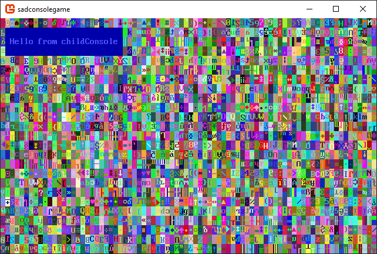

Get Started (1) - Draw on a console
Welcome to the start of the Getting Started with SadConsole tutorial series. This series will outline how to use the basic parts of SadConsole from the perspective of a new developer.
Prerequisites
To complete this series, complete the following:
Either Visual Studio or Visual Studio for Mac.
- Make sure that you install the .NET Core cross-platform development workload. When you install Visual Studio, select it from the list of components. If you've already installed visual Visual Studio, run the Visual Studio Installer app and modify your installation.
A brand new SadConsole project in Visual Studio.
For more information, see the Create a new SadConsole .NET Core project in Visual Studio tutorial.
If you prefer, you can create a project with the dotnet SDK and use any editor you want. For more information, see Create a new SadConsole .NET Core project with .NET Core.
Warning
Because of the added complexity, I do not recommend that you create a MonoGame project using the MonoGame Visual Studio templates.
Sync your code to mine
The previous section leads you to material that helps you create a SadConsole project. To ensure that we start off with the same material, make your program.cs file look like the following:
using System;
using SadConsole;
using Microsoft.Xna.Framework;
using Console = SadConsole.Console;
namespace SadConsoleGame
{
public static class Program
{
static void Main()
{
// Setup the engine and create the main window.
SadConsole.Game.Create(80, 25);
// Hook the start event so we can add consoles to the system.
SadConsole.Game.OnInitialize = Init;
// Start the game.
SadConsole.Game.Instance.Run();
SadConsole.Game.Instance.Dispose();
}
static void Init()
{
var console = new Console(80, 25);
console.FillWithRandomGarbage();
console.Fill(new Rectangle(3, 3, 23, 3), Color.Violet, Color.Black, 0, 0);
console.Print(4, 4, "Hello from SadConsole");
SadConsole.Global.CurrentScreen = console;
}
}
}
You should be able to run this code and see the following output:

One other thing to do. Make sure the namespace you're using is SadConsoleGame. You can change the default namespace in the project properties in Visual Studio, or you can (in Visual Studio 2019) double-click the sadconsolegame.csproj file to open it and make sure the <RootNamespace> is set to SadConsoleGame. If it is missing, add it.
Additionally, the <TargetFramework> value should be set to either netcoreapp3.0 or netcoreapp2.2.
<Project Sdk="Microsoft.NET.Sdk">
<PropertyGroup>
<OutputType>WinExe</OutputType>
<TargetFramework>netcoreapp3.0</TargetFramework>
<RootNamespace>SadConsoleGame</RootNamespace>
</PropertyGroup>
Exploring the sample code
The static void Init() method created in the previous section provides a simple place to easily explore and play with SadConsole without creating any real game code. The Init method is declared as static which means that you don't have to create an object to access this method. This method was passed to SadConsole in the code at the start of the program. This is a hook where you can provide some extra initialization code for your game, such as creating all the startup variables and objects.
At the very top of the program are using statements which imports common SadConsole types into your programming space. Don't worry about those for now, but think of it like this. Just like how a house is located at an address in a neighborhood, so too are types. SadConsole types have an "address" that identify where they are located. One common one is SadConsole.Console. We're importing that directly so we only have to refer to it as Console.
Let's explore the Init method's code.
static void Init()
{
var console = new Console(80, 25);
console.FillWithRandomGarbage();
console.Fill(new Rectangle(3, 3, 23, 3), Color.Violet, Color.Black, 0, 0);
console.Print(4, 4, "Hello from SadConsole");
SadConsole.Global.CurrentScreen = console;
}
The first line of code in this method creates a new
SadConsole.Consolewith a width of 80 cells and a height of 25 cells, and assigns it to the variableconsole.var console = new Console(80, 25);This next line fills the console with random characters and colors. It's used for debugging and it makes a pretty first screen.
console.FillWithRandomGarbage();The next two lines are draw commands. The first is the
Fillcommand, which fills a region of the console with a foreground color, background color, and a glyph character.console.Fill(new Rectangle(3, 3, 23, 3), Color.Violet, Color.Black, 0, 0); //Fill: (Region, Foreground, Background, Glyph character, Glyph mirror setting)The last draw command in this example is the
Printcommand. This prints a string at a specific X, Y coordinates.console.Print(4, 4, "Hello from SadConsole");The last line in this example code sets the current screen. The current screen is the object that is displayed on the screen and processed by the keyboard and mouse handlers. If you don't set the current screen to something, nothing will be displayed when you run your game.
SadConsole.Global.CurrentScreen = console;
Playing with SadConsole
Before we start this part of the tutorial, lets reset our code to a basic random console.
static void Init()
{
var console = new Console(80, 25);
console.FillWithRandomGarbage();
SadConsole.Global.CurrentScreen = console;
}
If you run it, you see the basic random console but it's missing the black box that says "Hello from SadConsole."
Child consoles
You can attach consoles to other consoles, creating a child-parent relationship between them. When a console with children (the parent) is repositioned, all child consoles move along with it.
Let's demonstrate creating attaching a console.
Replace the Init code with the following:
static void Init()
{
var console = new Console(80, 25);
console.FillWithRandomGarbage();
var childConsole = new Console(25, 3);
childConsole.Position = new Point(1, 1);
childConsole.Fill(ColorAnsi.BlueBright, ColorAnsi.Blue, 0);
childConsole.Print(1, 1, "Hello from childConsole");
console.Children.Add(childConsole);
SadConsole.Global.CurrentScreen = console;
}
If you notice the last line, the console variable (the one with all the random colors) is still assigned as the current screen. However, the lines above it have created a second console and attached it to the first console. Let's look at that code line by line.
First, a second console is created and assigned to the
childConsolevariable. This one is smaller in size, and if you notice, it's just about the same size as the black box we created in the previous section of the tutorial: 25 x 3.var childConsole = new Console(25, 3);The next three lines you're familiar with because of the previous section of this tutorial. However there is something new. First, the
Fillmethod is using a different parameter set. This is called a method overload. Methods may be designed to accept different combinations of parameters. In this case, only the Foreground, Background, and Glyph need to be passed to fill thechildConsole.childConsole.Position = new Point(1, 1); childConsole.Fill(ColorAnsi.BlueBright, ColorAnsi.Blue, 0); childConsole.Print(1, 1, "Hello from childConsole");Also, notice that the color parameters are set differently. Instead of the using the
Colorclass, theColorAnsiclass is used.ColorAnsicomes from SadConsole directly and has a set of colors that map to the traditional 16 EGA ANSI colors.Finally, the last line of the new code adds the
childConsoleto a parent console.console.Children.Add(childConsole);
When you run this code, you'll see a different result.

Since the child console is attached to the parent, you can interact with it individually. For example, try running your game again, but change some stuff such as the position, visibility, and even change the position of the parent to see how it affects the child. Try one of the following lines of code.
// Hide the child console
childConsole.IsVisible = false;
// Move the child console to a different position
childConsole.Position = new Point(40, 18);
// Move the parent console. Note how it changes where the childConsole is drawn.
console.Position = new Point(4, 4);
Exploring some basics
Now that you've seen how the parent-child relationship works with consoles, let's explore a little more about how to change the console, like we did with printing.
First, let's start with some clean code. Replace the Init method with the following:
static void Init()
{
var console = new Console(80, 25);
// New code starts here
SadConsole.Global.CurrentScreen = console;
}
You now have a blank console, which really, you won't be able to tell that it exists because it just looks like a black background. Try each of the following lines of code. Paste each line below the // New code starts here code comment. You can try and run your game with each line individually to see the result.
Change a specific cell in the console. You can adjust the foreground color, the background color, the glyph, or the glyph mirror setting of any X,Y coordinate in the console.
Set the background of a cell. This fills the cell with a specific color.
// X, Y, Color console.SetBackground(2, 2, Color.DarkGray);Set the glyph of a cell. This changes the character displayed in the cell. The glyph is based on the character code in the font file. For more information about how a font sheet is put together and how the glyph index works, see Basic Font Information.
// X, Y, Glyph index console.SetGlyph(2, 2, 1);Set the foreground color of a cell. A glyph is displayed in the color of the foreground of the cell. So by changing the foreground color, you change the color of the glyph. If the glyph is set to
0, it is blank and you won't see any character symbol and any foreground color for that cell.// X, Y, Color console.SetForeground(2, 2, Color.DarkBlue);Change the mirror of a cell. Each cell is initially set to
Nonewhich represents un-mirrored. You can set the mirror toNone,FlipHorizontally, andFlipVertically.// X, Y, Mirror set console.SetMirror(2, 2, Microsoft.Xna.Framework.Graphics.SpriteEffects.FlipVertically);Draw shapes on the console.
Draw a Line. Simply sets the colors and glyph of all cells that fall in the path of a line. The line is made from a starting coordinate to the ending coordinate.
// Start XY, End XY, Foreground color, Background color, Glyph character console.DrawLine(new Point(2, 4), new Point(20, 6), Color.BlueViolet, Color.White, 4);Draw a circle. A circle is drawn inside of the rectangle shape. The
Celltype is used to represent the combination of Foreground color, Background color, and glyph. Many different methods in SadConsole will use aCellas a way to represent the appearance settings to apply to something.console.DrawCircle(new Rectangle(10, 10, 8, 4), new Cell(Color.BlueViolet, Color.White, 4));Draw a box. Like the circle, a rectangle and cell appearance are used to draw a box.
console.DrawBox(new Rectangle(10, 17, 8, 4), new Cell(Color.BlueViolet, Color.White, 4));
Conclusion
You've now explored some of the basics of SadConsole. Keep playing around with these commands. The next part of this series will explore keyboard and mouse input.
This tutorial series is in progress. The next part of the series has not yet been published.